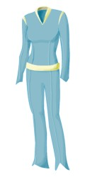
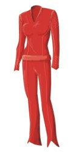

T'Pol |
|
|||||||
 |
Dati Personali
Nata nel 2088 circa (Zero Hour).
Genitori: T'Les, il padre è deceduto prima che lei entrasse a far parte
dell'equipaggio dell'Enterprise
(Home).
Una sua trisavola si chiamava T'Mir e ha partecipato ad una spedizione segreta
sulla Terra nel 1957.
Sposata con Koss nel 2154 (Home),
l'unione è stata sciolta poco tempo dopo (Kir'Shara).
Vulcaniana, prima di arrivare
sulla Terra nel dipartimento scientifico,
T'Pol è stata assegnata al Ministero della Sicurezza e addestrata dallo stesso.
Su Vulcano T'Pol ha partecipato al
rituale del Kahls'wan, che consiste nel sopravvivere per dieci giorni nel
deserto (The Catwalk). Ha completato
l'addestramento nel 2135 ed è
stata assegnata al recupero di alcuni agenti segreti non rientrati su
Vulcano dopo la stipula dell'alleanza con
Agaron; T'Pol ha recuperato solamente 6 dei 7 agenti a lei assegnati in quella
crisi. L'ultimo agente, Menos, è stato
recuperato solo nel 2152
grazie all'aiuto di Archer e
Mayweather; Menos le era già sfuggito su
Risa nel
2135. In quella occasione
T'Pol ha ucciso Jossen, un altro degli agenti. In seguito a questi eventi, T'Pol
è stata sottoposta al rituale del Fullara nel santuario di P'Jem, dopodiché ha
abbandonato il Ministero della Sicurezza (The Seventh).
In seguito è diventata ufficiale scientifico con il compito di valutare i
progressi degli Umani in cui si dimostra cauta e distaccata nei loro confronti,
da lei giudicati primitivi e irrazionali.
I suoi genitori avevano scelto per lei il suo futuro marito, Koss, un
architetto, ma nel 2151 T'Pol
sceglie di rimanere sull'Enterprise e rimandare il matrimonio (Breaking
the Ice).
Durante la permanenza nella
Distesa Delfica
T'Pol ha assunto volontariamente delle dosi di
trellio-D allo scopo di
provare nuovi tipi di emozioni; il Dottor Phlox ha tuttavia scoperto che quel
tipo di sostanza può provocare danni permanenti al sistema nervoso, quindi T'pol
ha interrotto l'assunzione di
trellio-D (Damage,
The Forgotten).
Alcune uniformi indossate da T'Pol:
| Uniforme di ordinanza vulcaniana (2151) |
 |
| Giacca da campo usata per le missioni di ricognizione nelle prime due stagioni |
|
| Uniforme bianca vista in Marauders |
 |
| Uniforme azzurra della terza stagione |  |
| Uniforme rossa della terza stagione |  |
Assegnamenti
| Seleya | L'ultima mansione ricoperta è stata quella di vice ufficiale scientifico sotto il comando del capitano Voris (Impulse). | |
| Due anni presso il Consolato di Vulcano sulla Terra (Fusion). | ||
| 2151 | Enterprise | Sub-Commander, ufficiale scientifico. |
| 14 febbraio 2154 | Enterprise | Assume il grado di Acting Captain in seguito alla morte presunta di Archer. |
| 17 maggio 2154 | Enterprise | Arruolata all'interno della Flotta Stellare con il grado di Commander. |